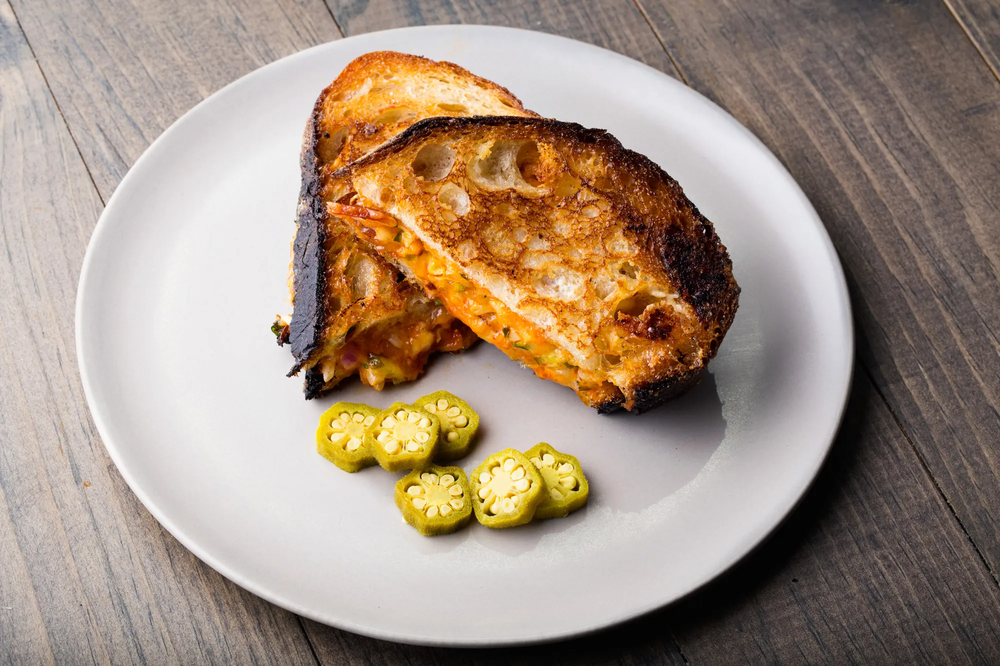

Gochujang Grilled Cheese

Description
This is a recipe I came up with inspired by the internet
Ingredients
- 1 tablespoon butter
- 3 tablespoons mayo, 1 tablespoon separated
- 2 tablespoons gochujang
- 1/2 cup cheddar cheese, shredded
- 1 green onion, sliced green parts
- 2 slices of sourdough bread
Steps
- Combine 2 tablespoons mayo and gochujang with cheese and green onion
- Spread mayo on exterior of sourdough bread.
- Put combined gochujang mayo cheese between the slices of bread
- Melt butter in pan
- Grill both sides of sandwich in the pan
- Cut into triangles